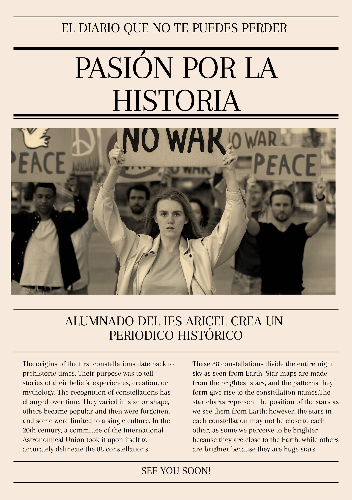

Creamos nuestro propio periódico

Este recurso se ha generado a partir de IA de Freepik
Estáis a punto de embarcaros en un proyecto apasionante: la creación de un periódico que os convertirá en cronistas del amanecer de un siglo que cambió el mundo para siempre. Vuestra misión es viajar en el tiempo, concretamente a las primeras décadas del siglo XX, un período efervescente, lleno de tensiones, cambios drásticos y eventos que definieron el futuro que hoy conocemos.
Imaginad por un momento que sois periodistas de 1914, 1917 o 1919. Vais a ser los ojos y oídos de la sociedad de la época, reportando sobre una realidad que se desmoronaba para dar paso a un nuevo orden.
¿Por qué es emocionante este proyecto?
Sois historiadores/as y periodistas a la vez: Tendréis que investigar a fondo, contrastar fuentes y comprender la complejidad de eventos como la Primera Guerra Mundial y la Revolución Rusa. No se trata solo de contar lo que pasó, sino de cómo se vivió en ese momento.
Desarrollaréis una mirada crítica: Os enfrentaréis a la propaganda de guerra, a las diferentes ideologías y a la necesidad de informar con rigor en tiempos de censura y conflicto. ¿Qué noticias eran censuradas? ¿Cómo afectaban a la gente común?
Dominaréis diferentes narrativas: Podréis escribir el editorial que condene la guerra, el artículo de opinión sobre la revolución, la noticia objetiva sobre una batalla decisiva o el comentario emotivo sobre la vida en las trincheras. La versatilidad del formato periodístico os permitirá explorar todas las facetas de la época.
Crearéis algo tangible y original: Vuestro periódico será el reflejo de vuestro trabajo en equipo, vuestra creatividad y vuestra capacidad de síntesis. Será una pieza única de historia hecha por vosotros.
Vuestro desafío:
Convertir la historia en noticia. Capturar la urgencia, el dramatismo y la esperanza de una era convulsa. Vuestro periódico debe ser tan impactante y relevante para vuestros lectores como lo fueron esos eventos para sus contemporáneos.
¡Asumid vuestros roles, afilad vuestras plumas y haced que el siglo XX cobre vida en vuestras páginas! ¡Adelante, periodistas!